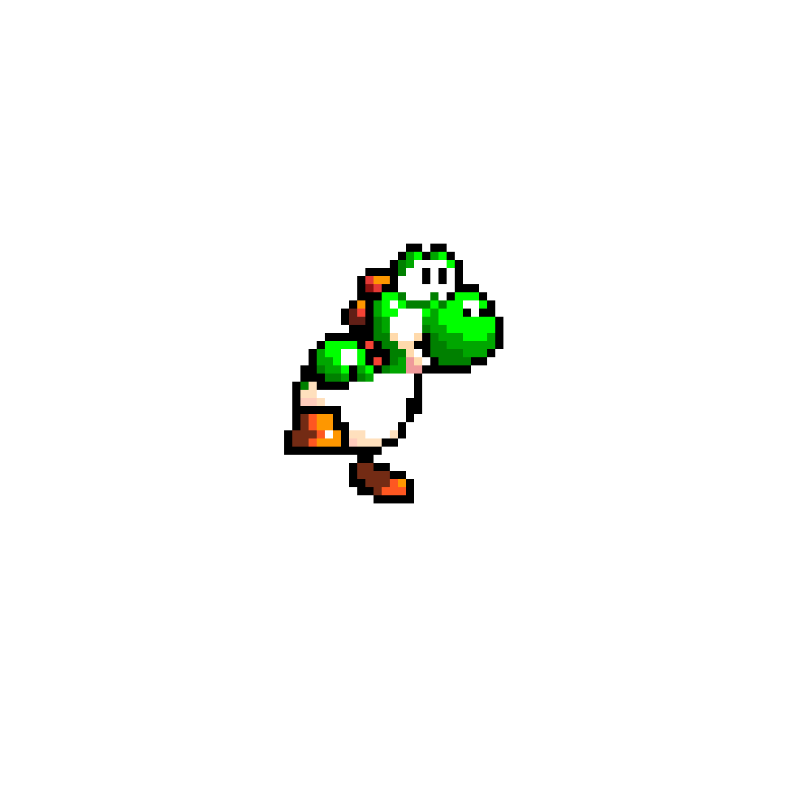
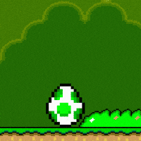

Historia
Yoshi, el dinosaurio de plataformas, fue creado por Shigeru Miyamoto y Shigefumi Hino en 1990. Su debut fue en el juego Super Mario World para la consola SNES, donde se introdujeron mecánicas nuevas que permitieron a Yoshi correr más rápido y saltar más alto. Yoshi también introdujo nuevos mecanismos de shell, donde los diferentes colores de shell interactuaban con Yoshi al ser tragados: una shell amarilla causaba un pequeño terremoto al saltar, una shell roja le permitía disparar fuegos de su boca, y una shell azul le daba la capacidad de volar brevemente. Estos nuevos mecanismos hicieron de Yoshi un personaje adictivo y memorable en el género de plataformas.

Información
- Saltar alto
- Flotar en el aire
- Usa su larga lengua para atrapar a los enemigos y luego comérselos
- Pone huevos para usar como arma
- Genera un huevo a su alrededor para esconderse en su interior y protegerse
Habilidades/caracteristicas especiales
- Los saltos de sacrificio de Yoshi: En Super Mario Galaxy 2, los saltos de sacrificio de Yoshi se convirtieron en un meme en la cultura gamer, donde él se lanza al aire para salvar el día.
- Los potenciadores de Yoshi en Super Mario Galaxy 2: Los potenciadores de Yoshi incluían una bombilla y un pimiento de velocidad, ambos únicos e inolvidables.
- La introducción de Yoshi en Super Mario World: El debut de Yoshi en el juego original de Super Mario en 1990 fue un cambio radical en los juegos de plataformas, brindando a Mario mayor movilidad.
Top 3 momentos más icónicos
Ficha técnica
| Edad | Peso | Estatura | Primera aparición | Debilidades | Alias |
|---|---|---|---|---|---|
| 24 y 25 años | 31 KG | 175cm | 1990 | El peso bajo de Yoshi lo hace fácil de derribar | Yoshiyaur Munchakoopas |
Registro de fans
Galería


